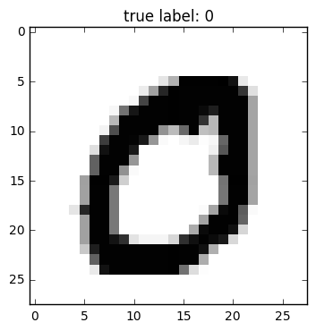

4 The Naive Bayes classification method
4.1 Introduction
In our discussion of Bayes Theorem, we looked at a situation in which we had a population consisting of people infected with COVID-19 and people not infected, and we had a test that we could apply to determine which class an individual belonged to. Because our test was not 100 percent reliable, a positive test result didn’t guarantee that a person was infected, and we used Bayes Theorem to evaluate how to interpret the positive test result. More specifically, our information about the test performance gave us the the conditional probabilities of positive and negative test results given infection status – so for example we were given \(P(+|\mathrm{infected})\), the chance of getting a positive test assuming the person is infected – and we used Bayes Theorem to determine \(P(\mathrm{infected}|+)\), the chance that a person was infected given a positive test result.
The Naive Bayes classification method is a generalization of this idea. We have data that belongs to one of two classes, and based on the results of a series of tests, we wish to decide which class a particular data point belongs to. For one example, we are given a collection of product reviews from a website and we wish to classify those reviews as either “positive” or “negative.” This type of problem is called “sentiment analysis.” For another, related example, we have a collection of emails or text messages and we wish to label those that are likely “spam” emails. In both of these examples, the “test” that we will apply is to look for the appearance or absence of certain key words that make the text more or less likely to belong to a certain class. For example, we might find that a movie review that contains the word “great” is more likely to be positive than negative, while a review that contains the word “boring” is more likely to be negative.
The reason for the word “naive” in the name of this method is that we will derive our probabilities from empirical data, rather than from any deeper theory. For example, to find the probability that a negative movie review contains the word “boring”, we will look at a bunch of reviews that our experts have said are negative, and compute the proportion of those that contain the word boring. Indeed, to develop our family of tests, we will rely on a training set of already classified data from which we can determine estimates of probabilities that we need.
4.2 An example dataset
To illustrate the Naive Bayes algorithm, we will work with the “Sentiment Labelled Sentences Data Set” ([1]). This dataset contains 3 files, each containing 1000 documents labelled \(0\) or \(1\) for “negative” or “positive” sentiment. There are 500 of each type of document in each file. One file contains reviews of products from amazon.com; one contains yelp restaurant reviews, and one contains movie reviews from imdb.com.
Let’s focus on the amazon reviews data. Here are some samples:
So there is no way for me to plug it in here
in the US unless I go by a converter. 0
Good case, Excellent value. 1
Great for the jawbone. 1
Tied to charger for conversations lasting more than
45 minutes.MAJOR PROBLEMS!! 0
The mic is great. 1
I have to jiggle the plug to get it to line up right to
get decent volume. 0
If you have several dozen or several hundred contacts, then
imagine the fun of sending each of them one by one. 0
If you are Razr owner...you must have this! 1
Needless to say, I wasted my money. 0
What a waste of money and time!. 0As you can see, each line consists of a product review followed by a \(0\) or \(1\); in this file the review is separated from the text by a tab character.
4.3 Bernoulli tests
We will describe the “Bernoulli” version of a Naive Bayes classifier for this data. The building block of this method is a test based on a single word. For example, let’s consider the word great among all of our amazon reviews. It turns out that great occurs \(5\) times in negative reviews and \(92\) times in positive reviews among our \(1000\) examples. So it seems that seeing the word great in a review makes it more likely to be positive. The appearances of great are summarized in Table 4.1 . We write ~great for the case where great does not appear.
| + | - | total | |
|---|---|---|---|
| great | 92 | 5 | 97 |
| ~great | 408 | 495 | 903 |
| total | 500 | 500 | 1000 |
In this data, positive and negative reviews are equally likely so \(P(+)=P(-)=.5\) From this table, and Bayes Theorem, we obtain the empirical probabilities (or “naive” probabilities).
\[ P(\mathbf{great} | +) = \frac{92}{500} = .184 \]
and
\[ P(\mathbf{great}) = \frac{97}{1000} = .097 \]
Therefore
\[ P(+|\mathbf{great}) = \frac{.184}{.097}(.5) = 0.948. \]
In other words, if you see the word great in a review, there’s a 95% chance that the review is positive.
What if you do not see the word great? A similar calculation from the table yields
\[ P(+|\sim\mathbf{great}) = \frac{408}{903} = .452 \]
In other words, not seeing the word great gives a little evidence that the review is negative (there’s a 55% chance it’s negative) but it’s not that conclusive.
The word waste is associated with negative reviews. It’s statistics are summarized in Table 4.2 .
| + | - | total | |
|---|---|---|---|
| waste | 0 | 14 | 14 |
| ~waste | 500 | 486 | 986 |
| total | 500 | 500 | 1000 |
Based on this data, the “naive” probabilities we are interested in are:
\[\begin{align*} P(+|\mathbf{waste}) &= 0\\ P(+|\sim\mathbf{waste}) &= .51 \end{align*}\]
In other words, if you see waste you definitely have a negative review, but if you don’t, you’re only slightly more likely to have a positive one.
What about combining these two tests? Or using even more words? We could analyze our data to count cases in which both great and waste occur, in which only one occurs, or in which neither occurs, within the two different categories of reviews, and then use those counts to estimate empirical probabilities of the joint events. But while this might be feasible with two words, if we want to use many words, the number of combinations quickly becomes huge. So instead, we make a basic, and probably false, assumption, but one that makes a simple analysis possible.
Assumption: We assume that the presence or absence of the words great and waste in a particular review (positive or negative) are independent events. More generally, given a collection of words \(w_1,\ldots, w_k\), we assume that their occurences in a given review are independent events.
Independence means that we have \[\begin{align*} P(\mathbf{great},\mathbf{waste}|\pm) &= P(\mathbf{great}|\pm)P(\mathbf{waste}|\pm)\\ P(\mathbf{great},\sim\mathbf{waste}|\pm) &= P(\mathbf{great}|\pm)P(\sim\mathbf{waste}|\pm)\\ &\vdots \\ \end{align*}\]
So for example, if a document contains the word great and does not contain the word waste, then the probability of it being a positive review is: \[ P(+|\mathbf{great},\sim\mathbf{waste}) = \frac{P(\mathbf{great}|+)P(\sim\mathbf{waste}|+)P(+)}{P(\mathbf{great},\sim\mathbf{waste})} \] while the probability of it being a negative review is \[ P(-|\mathbf{great},\sim\mathbf{waste}) = \frac{P(\mathbf{great}|-)P(\sim\mathbf{waste}|-)P(-)}{P(\mathbf{great},\sim\mathbf{waste})} \] Rather than compute these probabilities (which involves working out the denominators), let’s just compare them. Since they have the same denominators, we just need to compare numerators, which we call \(L\) for likelihood: Using the data from Table 4.1 and Table 4.2 , we obtain: \[ L(+|\mathbf{great},\sim\mathbf{waste}) = (.184)(1)(.5) = .092 \] and \[ L(-|\mathbf{great},\sim\mathbf{waste}) = (.01)(.028)(.5) = .00014 \] so our data suggests strongly that this is a positive review.
4.4 Feature vectors
To generalize this, suppose that we have extracted keywords \(w_1,\ldots, w_k\) from our data and we have computed the empirical values \(P(w_{i}|+)\) and \(P(w_{i}|-)\) by counting the fraction of positive and negative reviews that contain the word \(w_{i}\):
\[ P(w_{i}|\pm) = \frac{\hbox{ number of $\pm$ reviews that mention $w_{i}$}}{\hbox{ number of $\pm$ reviews total}} \]
Notice that we only count reviews, not ocurrences, so that if a word occurs multiple times in a review it only contributes 1 to the count. That’s why this is called the Bernoulli Naive Bayes – we are thinking of each keyword as yielding a yes/no test on each review.
Given a review, we look to see whether each of our \(k\) keywords appears or does not. We encode this information as a vector of length \(k\) containing \(0\)’s and \(1\)’s indicating the absence or presence of the \(k\)th keyword. Let’s call this vector the feature vector for the review.
For example, if our keywords are \(w_1=\mathbf{waste}\), \(w_2=\mathbf{great}\), and \(w_3=\mathbf{useless}\), and our review says
This phone is useless, useless, useless! What a waste!then the associated feature vector is \(f=(1,0,1)\).
For the purposes of classification of our reviews, we are going to forget entirely about the text of our reviews and work only with the feature vectors. From an abstract perspective, then, by choosing our \(k\) keywords, our “training set” of \(N\) labelled reviews can be replaced by an \(N\times k\) matrix \(X=(x_{ij})\) with entries \(0\) or \(1\), where \(x_{ij}=1\) if and only if the \(j^{th}\) keyword appears in the \(i^{th}\) review.
The labels of \(0\) or \(1\) for unfavorable or favorable reviews can also be packaged up into a \(N\times 1\) vector \(Y\) that serves as our “target” variable.
Setting things up this way lets us express the computations of our probabilities \(P(w_{i}|\pm)\) in vector form. In fact, \(Y^{\intercal}X\) is the sum of the rows of \(X\) corresponding to positive reviews, and therefore, letting \(N_{\pm}\) denote the number of \(\pm\) reviews, \[ P_{+} = \frac{1}{N_{+}}Y^{\intercal}X = \left[\begin{array}{cccc} P(w_{1}|+)& P(w_{2}|+) & \cdots &P(w_{k}|+)\end{array}\right]. \] Similarly, since \(Y\) and \(X\) have zero and one entries only, if we write \(1-Y\) and \(1-X\) for the matrices obtained by replacing every entry \(z\) by \(1-z\) in each matrix, we have: \[ P_{-} = \frac{1}{N_{-}}(1-Y)^{\intercal}X = \left[\begin{array}{cccc} P(w_{1}|-)& P(w_{2}|-) & \cdots &P(w_{k}|-)\end{array}\right]. \]
Note that the number of positive reviews is \(N_{+}=Y^{\intercal}Y\) and the number of negative ones is \(N_{-}=N-N_{+}\). Since \(P(+)\) is the fraction of positive reviews among all reviews, we can compute it as \(P(+)=\frac{1}{N}Y^{\intercal}Y\), and \(P(-)=1-P(+)\).
4.5 Likelihood
If a review has an associated feature vector \(f=(f_1,\ldots, f_k)\), then by independence the probability of that feature vector ocurring within one of the \(\pm\) classes is \[ P(f|\pm) = \prod_{i: f_{i}=1} P(w_{i}|\pm)\prod_{i: f_{i}=0}(1-P(w_{i}|\pm)) \] which we can also write \[ P(f|\pm) = \prod_{i=1}^{k} P(w_{i}|\pm)^{f_{i}}(1-P(w_{i}|\pm))^{(1-f_{i})}. \tag{4.1}\]
These products aren’t practical to work with – they are often the product of many, many small numbers and are therefore really tiny. Therefore it’s much more practical to work with their logarithms. \[ \log P(f|\pm) = \sum_{i=1}^{k} f_{i}\log P(w_{i}|\pm) + (1-f_{i})\log(1-P(w_{i}|\pm)) \tag{4.2}\]
If we have a group of reviews \(N\) organized in a matrix \(X\), where each row is the feature vector associated to the corresponding review, then we can compute all of this at once. We’ll write \(\log P_{\pm}=\log P(X|\pm)\) as the row vector whose \(i^{th}\) entry is \(\log P(f_{i}|\pm)\):
\[ \log P(X|\pm) = X(\log P_{\pm})^{\intercal}+(1-X)(\log (1-P_{\pm}))^{\intercal}. \tag{4.3}\]
By Bayes Theorem, we can express the chance that our review with feature vector \(f\) is positive or negative by the formula: \[ \log P(\pm|f) = \log P(f|\pm)+\log P(\pm) - \log P(f) \] where \[ P(\pm) = \frac{\hbox{ the number of $\pm$ reviews}}{\hbox{ total number of reviews}} \] and \(P(f)\) is the fraction of reviews with the given feature vector. (Note: in practice, some of these probabilities will be zero, and so the log will not be defined. A common practical approach to dealing with this is to introduce a “fake document” into both classes in which every vocabulary word appears – this guarantees that the frequency matrix will have no zeros in it).
A natural classification rule would be to say that a review is positive if \(\log P(+|f)>\log P(-|f)\), and negative otherwise. In applying this, we can avoid computing \(P(f)\) by just comparing \(\log P(f|+)+\log P(+)\) and \(\log P(f|-)+\log P(-)\) computed using Equation 4.2. Then we say:
- a review is positive if \(\log P(f|+)+\log P(+)>\log P(f|-)+\log P(-)\) and negative otherwise.
Again we can exploit the matrix structure to do this for a bunch of reviews at once. Using Equation 4.3 and the vectors \(P_{\pm}\) we can compute column vectors corresponding to both sides of our decision inequality and subtract them. The positive entries indicate positive reviews, and the negative ones, negative reviews.
4.6 The Bag of Words
In our analysis above, we thought of the presence or absence of certain key words as a set of independent tests that provided evidence of whether our review was positive or negative. This approach is suited to short pieces of text, but what about longer documents? In that case, we might want to consider not just the presence or absence of words, but the frequency with which they appear. Multinomial Naive Bayes, based on the “bag of words” model, is a classification method similar to Bernoulli Naive Bayes but which takes term frequency into account.
Let’s consider, as above, the problem of classifying documents into one of two classes. We assume that we have a set of keywords \(w_1,\ldots, w_k\). For each class \(\pm\), we have a set of probabilities \(P(w_i|\pm)\) with the property that \[ \sum_{i=1}^{k}P(w_{i}|\pm)=1. \]
The “bag of words” model says that we construct a document of length \(N\) in, say, the \(+\) class by independently drawing a word \(N\) times from the set \(w_1,\ldots, w_k\) with probabilities \(P(w_{i}|+)\). The name “bag of words” comes from thinking of each class as having an associated bag containing the words \(w_1,\ldots, w_k\) with relative frequencies given by the probabilities, and generating a document by repeatedly drawing a word from the bag.
In the Multinomial Naive Bayes method, we estimate the probabilities \(P(w_{i}|\pm)\) by counting the number of times each word occurs in a document of the given class: \[ P(w_{i}|\pm) = \frac{\hbox{ number of times word $i$ occurs in $\pm$ documents}}{\hbox{ total number of words in $\pm$ documents}} \] This is the “naive” part of the algorithm. Package up these probabilities in vectors: \[ P_{\pm} = \left[\begin{array}{ccc} P(w_{1}|\pm) & \cdots & P(w_{k}|\pm)\end{array}\right]. \]
As in the Bernoulli case, we often add a fake document to each class where all of the words occur once, in order to avoid having zero frequencies when we take a logarithm later.
Now, given a document, we associate a feature vector \(\mathbf{f}\) whose \(i^{th}\) entry is the frequency with which word \(i\) appears in that document. The probability of obtaining a particular document with feature vector \(\mathbf{f}=(f_1,\ldots, f_k)\) from the bag of words associated with class \(\pm\) is given by the “multinomial” distribution: \[ P(\mathbf{f}|\pm)=\frac{N!}{f_1!f_2!\cdots f_k!} \prod_{i=1}^{k} P(w_{i}|\pm)^{f_{i}} \] which generalizes the binomial distribution to multiple choices. The constant will prove irrelevant, so let’s call the interesting part \(L_{\pm}\): \[ L(\mathbf{f}|\pm)= \prod_{i=1}^{k} P(w_{i}|\pm)^{f_{i}} \]
From Bayes Theorem, we have \[ P(\pm|\mathbf{f}) = \frac{P(\mathbf{f}|\pm)P(\pm)}{P(\mathbf{f})} \] where \(P(\pm)\) is estimated by the fraction of documents (total) in each class.
We classify our document by considering \(P(\pm|\mathbf{f})\) and concluding:
- a document with feature vector \(\mathbf{f}\) is in class \(+\) if \(\log P(+|\mathbf{f})>\log P(-|\mathbf{f})\).
In this comparison, both the constant (the multinomial coefficient) and the denominator cancel out, so we only need to compare \(\log L(\mathbf{f}|+)+\log P(+)\) with \(\log L(\mathbf{f}|-)+\log P(-)\) We have \[ \log L(\mathbf{f}|\pm) = \sum_{i=1}^{k} f_{i}\log P(w_{i}|\pm) \] or, in vector form, \[ \log P(\mathbf{f}|\pm) = \mathbf{f}\log P_{\pm}^{\intercal} \]
Therefore, just as in the Bernoulli case, we can package up our document \(i\) as an \(N\times k\) data matrix \(X\), where position \(ij\) gives the number of times word \(j\) occurs in document \(i\). Then we can compute the vector \[ \hat{Y} = X\log P_{+}^{\intercal} + \log P(+)-X\log P_{-}^{\intercal} - \log P(-) \] and assign those documents where \(\hat{Y}>0\) to the \(+\) class and the rest to the \(-\) class.
4.7 Other applications
We developed the Naive Bayes method for sentiment analysis, but once we chose a set of keywords our training data was reduced to an \(N\times k\) matrix \(X\) of \(0/1\) entries, together with an \(N\times 1\) target column vector \(Y\). Then our classification problem is to decide whether a given vector of \(k\) entries, all \(0\) or \(1\), is more likely to carry a \(0\) or \(1\) label. All of the parameters we needed for Naive Bayes – the various probabilities – can be extracted from the matrix \(X\).
For example, suppose we have a collection of images represented as black/white pixels in a grid that belong to one of two classes. For example, we might have \(28x28\) bitmaps of handwritten zeros and ones that are labelled, and we wish to construct a classifier that can decide whether a new \(28x28\) bitmap is a zero or one. An example of such a bitmap is given in Figure 4.1. We can view each \(28x28\) bitmap as a vector of length \(784\) with \(0/1\) entries and apply the same approach outlined above. However, there are other methods that are more commonly used for this problem, such as logistic regression and neural networks.
